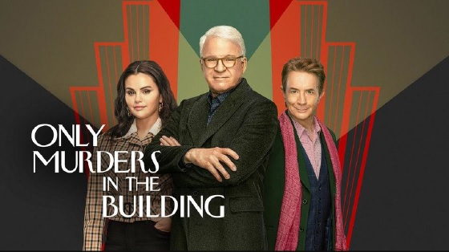

La 3ª temporada de "Only murders in the Building" será un exito

Pablo Zaklad
25 de Marzo del 2025
La serie producida y protagonizada por Steve Martin, Martin Short y Selena Gómez ha estrenado su tercera temporada en la plataforma de Disney Plus y Hulu. Luego de 2 temporadas exitosas la tercera promete y mucho, ya que a incorpora a dos actores de renombre que son Paul Rudd y Meryl Streep. Además, ya cuenta con 21 nominaciones a los premios Emmy y con un puntaje de 8,1/10 según la crítica de IDMb.